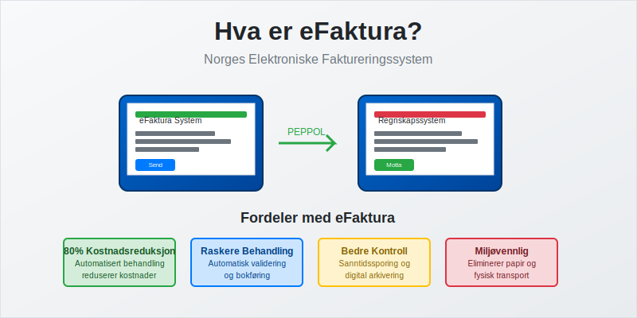
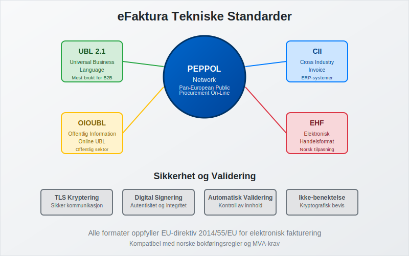
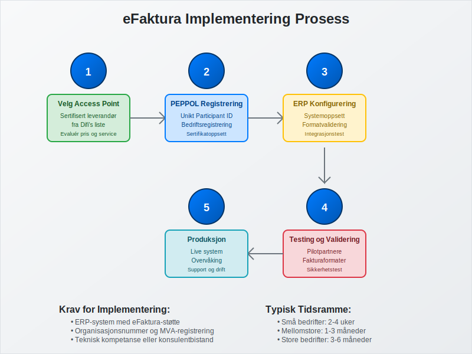
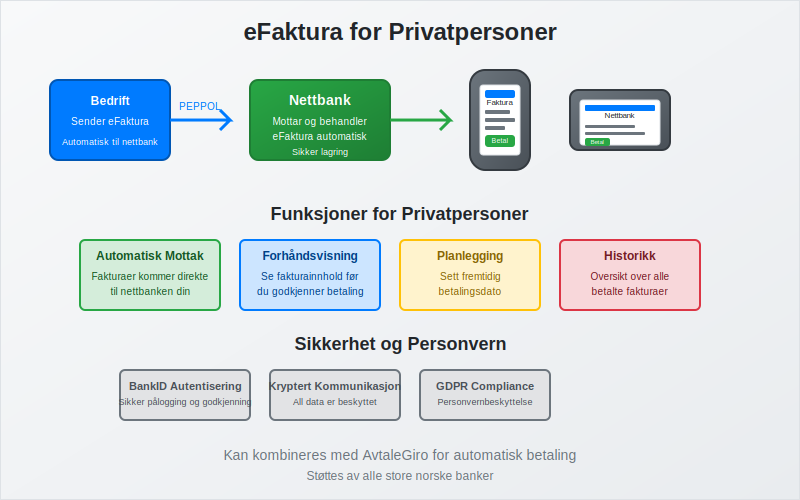
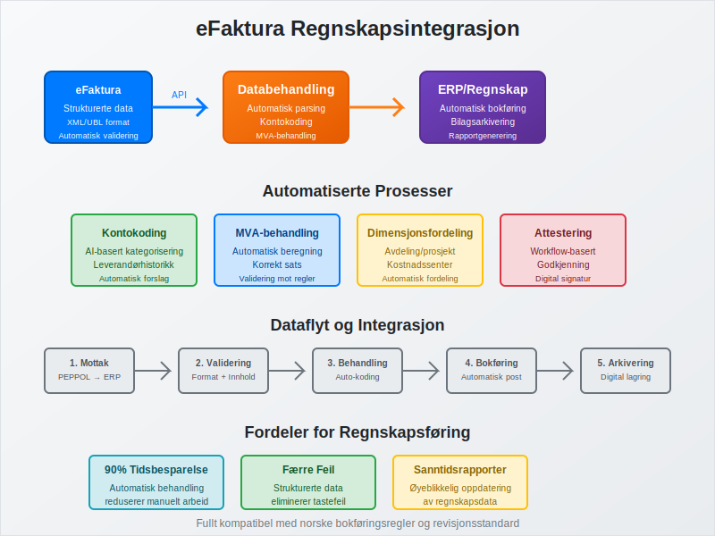

eFaktura er Norges elektroniske faktureringssystem som revolusjonerer måten bedrifter og privatpersoner håndterer fakturaer på. Dette digitale systemet erstatter tradisjonelle papirfakturaer med strukturerte, elektroniske dokumenter som kan behandles automatisk gjennom hele fakturabehandlingsprosessen - fra utsendelse til bokføring.
For å sikre at brukere autentiserer seg sikkert før de godkjenner eFakturaer, benyttes ofte BankID.
eFaktura er en sentral del av det bredere konseptet elektronisk fakturering, som omfatter alle former for digitale fakturaløsninger i Norge.
Systemet benytter ELMA for å slå opp mottakerens elektroniske adresse og sikre korrekt levering.

eFaktura representerer en fundamental endring i hvordan norske virksomheter håndterer fakturabehandling, og er en sentral del av digitaliseringen av regnskapet. Systemet bygger på internasjonale standarder og sikrer både juridisk gyldighet og teknisk interoperabilitet mellom ulike systemer.
Seksjon 1: Tekniske Standarder og Formater
eFaktura i Norge baserer seg på PEPPOL-nettverket (Pan-European Public Procurement On-Line), som er EUs standard for elektronisk fakturabehandling. Dette sikrer at norske bedrifter kan utveksle fakturaer sømløst med partnere i hele Europa.

1.1 Støttede Dokumentformater
eFaktura-systemet støtter flere standardiserte formater:
| Format | Beskrivelse | Bruksområde |
|---|---|---|
| UBL 2.1 | Universal Business Language | Mest brukte format for B2B-fakturaer |
| CII | Cross Industry Invoice | Alternative til UBL, brukes av enkelte ERP-systemer |
| OIOUBL | Offentlig Information Online UBL | Spesielt for offentlig sektor |
| EHF | Elektronisk Handelsformat | Norsk tilpasning av UBL |
1.2 Juridiske Krav og Validering
For at en eFaktura skal være juridisk gyldig, må den oppfylle de samme kravene som tradisjonelle fakturaer:
- Unikt fakturanummer i sammenhengende serie
- Fakturadato og leveringsinformasjon
- Selgers organisasjonsnummer og MVA-registrering
- Kjøpers identifikasjon og leveringsadresse
- Detaljert varebeskrivelse med priser og MVA
- Totalbeløp og betalingsinformasjon
Alle eFakturaer valideres automatisk mot disse kravene før de sendes, noe som reduserer feil og sikrer bokføringsforskriftens krav oppfylles.
Seksjon 2: Implementering og Teknisk Infrastruktur
Implementering av eFaktura krever tilgang til PEPPOL Access Point - en sertifisert tjenesteleverandør som håndterer den tekniske kommunikasjonen mellom systemer.

2.1 Krav til Systemintegrasjon
For å sende og motta eFakturaer må bedrifter ha:
- ERP-systemer eller regnskapssystem med eFaktura-støtte
- PEPPOL-registrering med unikt Participant ID
- Sertifisert Access Point for teknisk kommunikasjon
- Validering og testing av fakturaformater
2.2 Registrering og Sertifisering
Prosessen for å bli eFaktura-klar inkluderer:
- Velg Access Point-leverandør fra Difi’s godkjente liste
- Registrer bedriften i PEPPOL-nettverket
- Konfigurer ERP-system for eFaktura-støtte
- Test fakturaflyt med pilotpartnere
- Gå live med produksjonssystem
Mange norske regnskapssystemer har innebygd eFaktura-støtte, noe som forenkler implementeringen betydelig.
Seksjon 3: Fordeler for Bedrifter
eFaktura gir omfattende fordeler som påvirker hele fakturabehandlingsprosessen, fra bilagsmottak til attestering.
3.1 Økonomiske Besparelser
Studier viser at eFaktura kan redusere fakturabehandlingskostnader med opptil 80% sammenlignet med papirfakturaer:
| Kostnadselement | Papirfaktura | eFaktura | Besparelse |
|---|---|---|---|
| Utsendelse | 15-25 kr | 2-5 kr | 70-80% |
| Mottak og registrering | 50-100 kr | 5-15 kr | 85-90% |
| Arkivering | 10-20 kr | 1-3 kr | 85-90% |
| Total per faktura | 75-145 kr | 8-23 kr | 84-89% |
Eliminering av Fakturagebyr
En viktig økonomisk fordel med eFaktura er at det eliminerer behovet for fakturagebyr. Mange leverandører krever tilleggsgebyrer på 25-50 kr for papirfakturaer, men må tilby elektroniske alternativer gratis. Ved å velge eFaktura kan bedrifter og privatpersoner derfor spare betydelige beløp over tid:
- Papirfakturagebyr: 25-50 kr per faktura
- eFaktura: Gratis for mottaker
- Årlig besparelse: For en bedrift med 100 fakturaer månedlig kan dette utgjøre 30 000-60 000 kr årlig
3.2 Prosesseffektivisering
eFaktura automatiserer store deler av fakturabehandlingen:
- Automatisk mottak eliminerer manuell registrering
- Validering reduserer feil og reklamasjoner
- Direkteintegrasjon med ERP-systemer
- Automatisk attestering basert på forhåndsdefinerte regler
- Raskere betalingsflyt gjennom automatiserte prosesser
3.3 Forbedret Kontroll og Sporbarhet
Elektronisk fakturabehandling gir bedre oversikt og kontroll:
- Sanntidssporing av fakturastatus
- Automatisk arkivering i henhold til bokføringsloven
- Integrert rapportering for økonomisk analyse
- Redusert risiko for tap eller feilbehandling av fakturaer
Seksjon 4: eFaktura for Privatpersoner
For privatpersoner tilbys eFaktura som en tjeneste gjennom nettbanker, hvor fakturaer mottas elektronisk og kan behandles direkte i bankens systemer.

4.1 Funksjonalitet i Nettbank
Privatpersoners eFaktura-tjeneste inkluderer:
- Automatisk mottak av fakturaer fra registrerte avsendere
- Forhåndsvisning av fakturainnhold før betaling
- Betalingsplanlegging med mulighet for fremtidig betaling
- Historikk over alle mottatte og betalte fakturaer
- Integration med AvtaleGiro for automatisk betaling
- KID-nummer for automatisk identifikasjon og avstemming av betalinger
4.2 Sikkerhet og Personvern
eFaktura for privatpersoner er underlagt strenge sikkerhetskrav:
- Kryptering av all kommunikasjon
- Autentisering gjennom BankID
- Tilgangskontroll basert på kontorettigheter
- Revisjonsspor for alle transaksjoner
- GDPR-compliance for personvernbeskyttelse
Seksjon 5: Offentlig Sektor og Pålagte Krav
Den norske stat har innført obligatorisk eFaktura for alle leverandører til offentlig sektor fra 2019. Dette påvirker tusenvis av bedrifter som leverer varer og tjenester til stat, fylke og kommuner.
5.1 Krav til Offentlige Anskaffelser
Alle anskaffelser over 100 000 kr til offentlig sektor må faktureres elektronisk:
- EHF-format er påkrevd for offentlig sektor
- PEPPOL-registrering er obligatorisk
- Validering mot offentlige krav må bestås
- Leverandørregistrering i offentlige systemer
5.2 Sanksjoner ved Manglende Etterlevelse
Leverandører som ikke sender eFaktura til offentlig sektor risikerer:
- Forsinket betaling på grunn av manuell behandling
- Ekstra behandlingsgebyrer fra offentlige innkjøpere
- Utelukkelse fra fremtidige anbudsrunder
- Kontraktbrudd i alvorlige tilfeller
Seksjon 6: Integrasjon med Regnskapssystemer
eFaktura integreres sømløst med moderne regnskapssystemer og påvirker hele bokføringsprosessen.

6.1 Automatisk Bokføring
Strukturerte eFakturaer muliggjør automatisk bokføring:
- Kontokoding basert på varebeskrivelser og leverandørhistorikk
- MVA-behandling automatiseres gjennom strukturerte data
- Dimensjonsfordeling for avdelings- og prosjektregnskap
- Integrasjon med bilagsføring
6.2 Forbedret Rapportering
eFaktura gir bedre grunnlag for økonomisk rapportering:
- Sanntidsdata for driftsregnskap
- Automatisk kategorisering av driftskostnader
- Forbedret budsjettoppfølging
- Integrert analyse av leverandørforhold og innkjøpsmønstre
Seksjon 7: Sikkerhet og Compliance
eFaktura-systemet er bygget med omfattende sikkerhetstiltak for å beskytte sensitive forretningsdata og sikre juridisk gyldighet.
7.1 Teknisk Sikkerhet
PEPPOL-nettverket implementerer flere sikkerhetslag:
- TLS-kryptering for all kommunikasjon
- Digital signering av alle fakturaer
- Sertifikatbasert autentisering av alle parter
- Ikke-benektelse gjennom kryptografiske bevis
- Integritetskontroll av fakturainnhold
7.2 Juridisk Gyldighet
eFakturaer har samme juridiske status som papirfakturaer når de oppfyller:
- Bokføringslovens krav til dokumentasjon
- Sporbarhet gjennom hele prosessen
- Arkivering i henhold til lovpålagte oppbevaringsfrister
- Tilgjengelighet for revisjon og kontroll
Seksjon 8: Fremtidige Utviklingstrender
eFaktura-teknologien utvikler seg kontinuerlig med nye funksjoner og forbedringer som vil påvirke fremtidens fakturabehandling.
8.1 Kunstig Intelligens og Automatisering
Nye AI-teknologier vil revolusjonere fakturabehandling:
- Intelligent kontokoding basert på maskinlæring
- Automatisk attestering gjennom AI-validering
- Prediktiv analyse for betalingsevne og risiko
- Automatisk matching mot bestillinger og leveranser
8.2 Blockchain og Distribuerte Systemer
Fremtidige eFaktura-systemer kan inkludere:
- Blockchain-basert sporbarhet og ikke-benektelse
- Smart contracts for automatisk betaling ved leveranse
- Distribuert arkivering for økt sikkerhet
- Kryptovaluta-integrasjon for grenseoverskridende handel
8.3 Utvidet Funksjonalitet
Kommende funksjoner inkluderer:
- Sanntids fakturavalidering mot leveranser
- Integrert kvalitetskontroll og reklamasjonshåndtering
- Automatisk avstemming
- Forbedret rapportering og analyse
For internasjonale transaksjoner kan også proformafakturaer digitaliseres og integreres med eFaktura-systemet for å effektivisere tollbehandling og finansieringsløsninger før faktisk levering og fakturering.
Seksjon 9: Implementeringsguide for Bedrifter
For bedrifter som ønsker å implementere eFaktura, er det viktig å følge en strukturert tilnærming som sikrer vellykket innføring.
9.1 Forberedelse og Planlegging
Før implementering bør bedriften:
- Kartlegge nåværende fakturavolum og leverandørbase
- Evaluere ERP-systemets eFaktura-kapasiteter
- Identifisere nøkkelpartnere for pilottesting
- Budsjettere implementerings- og driftskostnader
- Planlegge opplæring av personale
9.2 Leverandørvalg og Kontrakter
Valg av riktig Access Point-leverandør er kritisk:
| Vurderingskriterier | Viktighet | Beskrivelse |
|---|---|---|
| Teknisk kompetanse | Høy | Erfaring med PEPPOL og ERP-integrasjon |
| Support og service | Høy | 24/7 support og norskspråklig hjelp |
| Prising | Medium | Konkurransedyktige priser for volum |
| Skalerbarhet | Medium | Mulighet for vekst og utvidelse |
| Sertifiseringer | Høy | Godkjent av Difi og relevante myndigheter |
9.3 Testing og Validering
Grundig testing er essensielt for vellykket implementering:
- Teknisk testing av fakturaformater og validering
- Prosesstest med utvalgte leverandører
- Integrasjonstest med regnskapssystem
- Brukertest av nye arbeidsflyter
- Sikkerhetstest av alle kommunikasjonskanaler
Seksjon 10: Kostnader og Lønnsomhetsanalyse
Implementering av eFaktura krever initial investering, men gir betydelige besparelser over tid.
10.1 Implementeringskostnader
Typiske kostnader for eFaktura-implementering:
| Kostnadskategori | Små bedrifter | Mellomstore | Store bedrifter |
|---|---|---|---|
| ERP-oppgradering | 50 000 - 150 000 kr | 200 000 - 500 000 kr | 500 000 - 2 000 000 kr |
| Access Point-setup | 10 000 - 25 000 kr | 25 000 - 50 000 kr | 50 000 - 100 000 kr |
| Konsulentbistand | 25 000 - 75 000 kr | 75 000 - 200 000 kr | 200 000 - 500 000 kr |
| Opplæring | 15 000 - 30 000 kr | 30 000 - 75 000 kr | 75 000 - 200 000 kr |
| Testing og validering | 10 000 - 20 000 kr | 20 000 - 50 000 kr | 50 000 - 150 000 kr |
10.2 Driftskostnader
Løpende kostnader for eFaktura-drift:
- Access Point-avgifter: 2-10 kr per sendt/mottatt faktura
- Systemvedlikehold: 10-20% av systemkostnad årlig
- Support og drift: 50 000 - 200 000 kr årlig avhengig av størrelse
10.3 Lønnsomhetsberegning
For en bedrift med 1000 fakturaer månedlig:
Årlige besparelser:
- Reduserte behandlingskostnader: 600 000 - 1 200 000 kr
- Mindre feil og reklamasjoner: 100 000 - 300 000 kr
- Raskere betalingsflyt: 200 000 - 500 000 kr
- Total årlig besparelse: 900 000 - 2 000 000 kr
Tilbakebetalingstid: Typisk 6-18 måneder avhengig av fakturavolum og kompleksitet.
Konklusjon
eFaktura representerer fremtiden for fakturabehandling i Norge og er en kritisk komponent i digitaliseringen av norsk næringsliv. Systemet tilbyr betydelige fordeler gjennom kostnadsbesparelser, prosesseffektivisering og forbedret kontroll, samtidig som det sikrer juridisk gyldighet og compliance med norske regnskapskrav.
For bedrifter som ennå ikke har implementert eFaktura, blir det stadig viktigere å vurdere overgangen - ikke bare på grunn av krav fra offentlig sektor, men også for å opprettholde konkurranseevne i et stadig mer digitalisert marked. Med riktig planlegging og implementering kan eFaktura transformere fakturabehandlingen fra en administrativ byrde til en strategisk fordel.
Fremtidige utviklinger innen AI, blockchain og automatisering vil ytterligere styrke eFakturas rolle som ryggraden i moderne regnskapsføring og finansiell styring.